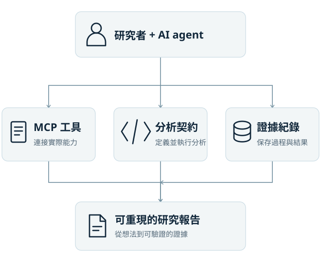
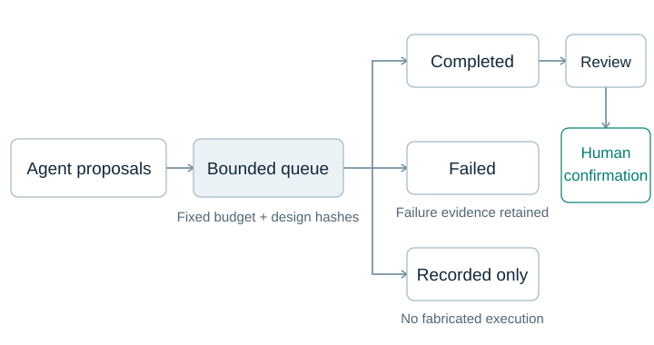

Agent 提出問題
以自然語言提出臨床問題，規劃需要的資料與分析任務。

以自然語言提出臨床問題，規劃需要的資料與分析任務。
透過 MCP 工具串接本機資料與分析環境，依分析契約執行並記錄過程。
檢視分析結果與證據紀錄，形成可重現、可分享的研究報告。
13 個階段串起研究規劃、分析與證據。三個關鍵確認點，讓研究者掌握方向。
專案建立、資料匯入、結構與品質
對齊問題、提出假說、審查並鎖定計畫
研究者確認：03 / 04 / 06檢查就緒、分析個案、彙整結果
組裝、稽核、改善與匯出

選擇研究目的，查看可執行的方法、必要欄位與解讀界線。
7 個方法
| 研究目的 | 方法 | 保留的證據 |
|---|---|---|
| 事件風險 | Risk estimates | RR、OR、RD 與信賴區間 |
| 診斷表現 | Diagnostic accuracy | 敏感度、特異度與各自分母 |
| 配對二元結果 | McNemar | 不一致配對數與精確檢定 |
| 量測一致性 | Bland–Altman | 偏差、一致性界限與不確定性 |
| 評分者一致性 | Cohen kappa | 一致性估計與限制 |
| 群聚平均效應 | GEE | 實際觀察數、個案數與穩健估計 |
| 個案間異質性 | Mixed effects | 隨機截距、固定效應與收斂狀態 |
本機執行，不需 Docker。這些工具支援研究，不取代臨床與統計審查。
查看完整方法與參數 →另提供 Table 1、組間比較、相關性、重複量測、迴歸、存活分析、ROC/AUC 與選用進階後端；各方法的假設與可用範圍請見文件。
VS Code 擴充套件提供本機 MCP 與研究工作流程。支援 Copilot、Codex 與 Cline。
在已 clone 的 repository 內，以 uv 安裝並啟動：
uv sync uv run python -m rde
擴充套件內含 Python 專案。外部 AutoML 為選用服務；RDE 核心不要求雲端模型金鑰。
效應量、信賴區間與方法限制
納入、排除與配對集合
計畫、決策、偏離與來源
可重現性與可信度需要研究設計、敏感度分析及研究者審查；工具完成不等於可直接發表。